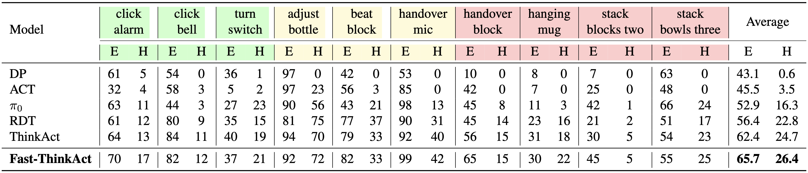

Experiment Results
LIBERO, SimplerEnv, and Inference Latency
(a)-(e) Quantitative comparisons of robot manipulation tasks on SimplerEnv and LIBERO benchmarks. (f) Latency comparison across 3B and 7B reasoning VLAs.

RoboTwin2.0
Quantitative comparisons of bimanual manipulation tasks on RoboTwin2.0. Background colors indicate task length based on expert demonstrations: short (80-100) , medium (110-220) , long (270-470) steps.
Embodied Reasoning Benchmarks
Quantitative comparisons of embodied reasoning tasks on EgoPlan-Bench2, RoboVQA, and OpenEQA.